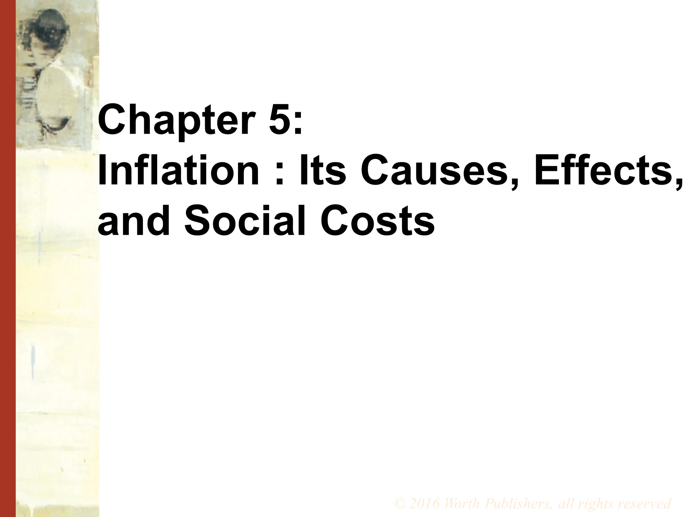

5-1
第 5 章 通货膨胀：成因、影响与社会成本

第 5 章
通货膨胀：成因、影响与社会成本
教师备注2 段
Chapter 5 covers the quantity theory of money, a simple theory that explains the long-run behavior of inflation fairly well. It also introduces the money demand function, L(i,Y), that will be used in the IS-LM model in later chapters. Chapter 5 explains the social costs of inflation and concludes with a discussion of the Classical Dichotomy and Neutrality of Money, a central topic in monetary theory.
Mostly, the material is not difficult, but it is theoretical, especially the classical dichotomy and neutrality of money.